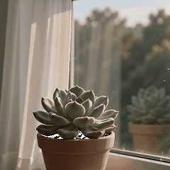

今天窗台的多肉又长胖了一圈，比上周圆了不少。下班前用手机录了段小视频，动起来更可爱了 🌿
周末愉快，大家也要像多肉一样，好好吸收阳光呀。
 周晏 研究员
2026-07-02 17:45 · 浏览 486
周晏 研究员
2026-07-02 17:45 · 浏览 486
今天窗台的多肉又长胖了一圈，比上周圆了不少。下班前用手机录了段小视频，动起来更可爱了 🌿
周末愉快，大家也要像多肉一样，好好吸收阳光呀。

暖阳 病友 · 2026-07-02 18:03
好治愈。明天也去阳台看看我的绿萝。
周晏 研究员 · 2026-07-02 18:10
嗯嗯，植物和人一样，慢慢长就好 :)
一只画画的猫 病友 · 2026-07-02 18:22
想看它再胖一点的样子，下下周再拍一张吧周医生！